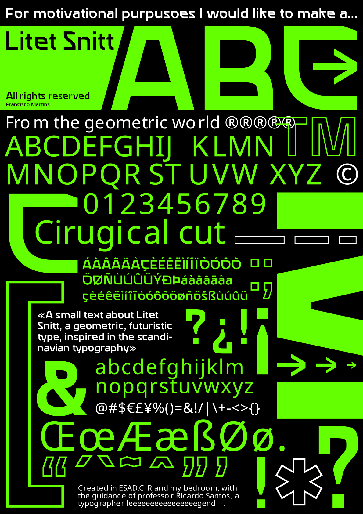

02
Litet Snitt
A geometric, futuristic typeface inspired by Scandinavian typography.
Context
Developed in the Typography course at ESAD.CR, this project explores typography as the main element of visual communication, through a contemporary editorial composition.
Objective
To build a structured typographic composition, applying principles of hierarchy, alignment, rhythm and modular organisation to bring out the typeface's legibility and expression.
Final Proposal
The final proposal takes a minimalist approach built on a modular grid, combining visual hierarchy, contrast of scale and negative space to create a clean, balanced and functional composition.
